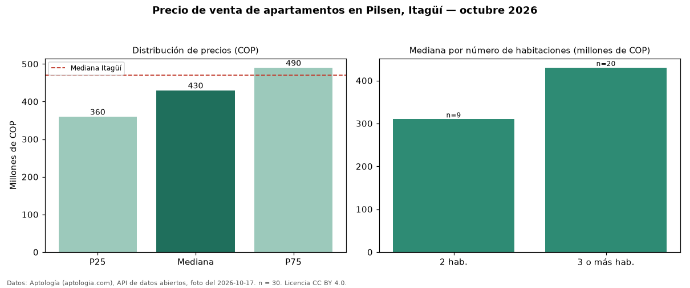

Precio de venta de apartamentos en Pilsen, Itagüí — octubre 2026
COP 430 millones es el precio mediano de apartamentos en venta en Pilsen, Itagüí (n = 30 avisos). Frente al total de Itagüí (COP 470 millones), el barrio está 9 % por debajo. El segmento con más oferta es el de 3 o más habitaciones (20 avisos, mediana COP 430 millones); pasar de 2 habitaciones a 3 o más habitaciones sube la mediana 39 %. Por mediana, es el puesto 11 de 14 barrios de Itagüí con al menos 30 avisos de apartamentos en venta: en la franja media. El aviso más barato pide COP 180 millones y el más caro COP 839 millones. 60 % de los avisos incluye parqueadero, y su mediana (COP 488 millones) está 13 % por encima de la general. La dispersión es baja: el cuartil superior (COP 490 millones) es 1,4 veces el inferior (COP 360 millones). Datos: Aptología (aptologia.com), API de datos abiertos, licencia CC BY 4.0 — https://www.aptologia.com/venta/itagui/pilsen. Archivos: PDF de 2 páginas, CSV con las cifras y gráfica PNG.

| Avisos únicos | 30 |
|---|---|
| Percentil 25 | COP 360.000.000 |
| Mediana | COP 430.000.000 |
| Percentil 75 | COP 490.000.000 |
Fuente: avisos vigentes de portales inmobiliarios recopilados por Aptología, deduplicados (mínimo 30 avisos únicos por celda). Precios pedidos, no cerrados. Fecha: 2026-10-18.